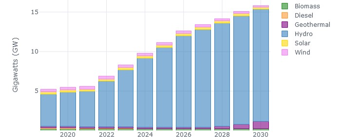
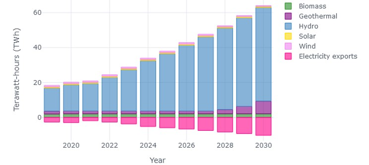
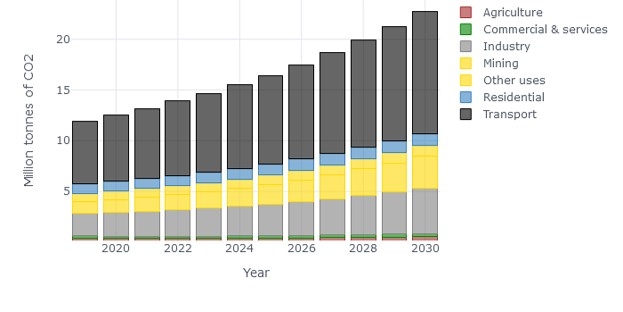
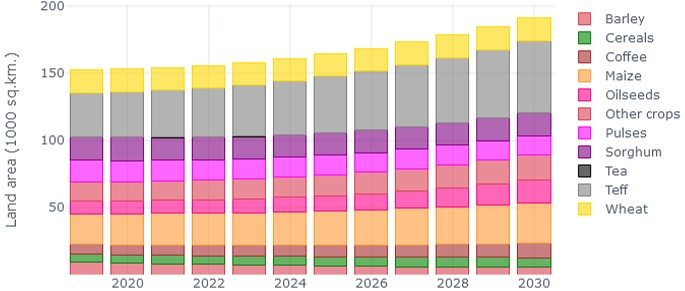
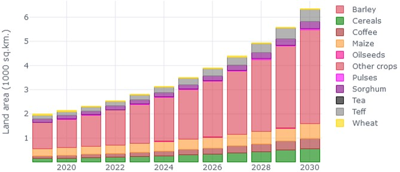
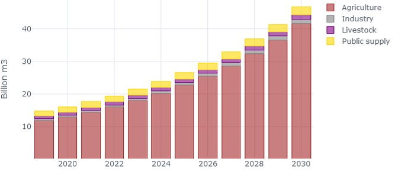
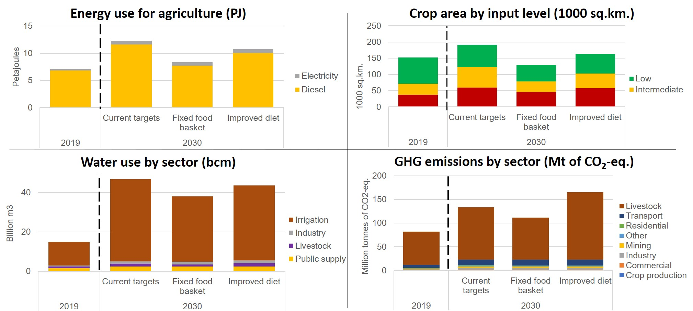
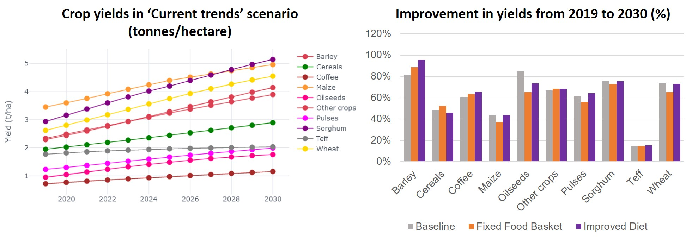

Results¶
The latest results of the CLEWS-Ethiopia model for all scenarios are presented in this section.
Baseline¶
Power capacity and generation
Power capacity increases from around 5 GW in 2019 to over 15 GW in 2030, dominated by hydro power production.

Electricity exports increase from ~2.7 TWh in 2022 to over 10 TWh by 2030 as the Grand Ethiopian Renaissance Dam (GERD) comes online.

CO2 emissions
Transport sector is responsible for 53% of CO2 emissions from energy use and the livestock sector is responsible for more than 85% of overall GHG emissions.

Land use
Area under irrigation increases from 1.3% of total crop area in 2019 to around 3.8% by 2030. The largest increase in share of irrigation for Cereals (Other), Coffee, and Sorghum

Water use
Largest increase in water use in agriculture sector: 11 bcm in 2019 to over 41 bcm in 2030. Total water use is within total available water resources, but may exceed groundwater replenishment rates in regions with high shares of irrigated crop area.

Agriculture Modernisation¶
Substantial potential for modernization of agriculture. Yields (tonnes produced per hectare) could improve by 50 to 110% through greater use of inputs and mechanization
Productivity improvements would limit the need for additional cropland, but does require additional inputs in the form of energy, water, pesticides and fertilizer
Requires substantial increase in investment and inputs. Annual investment would need to be 2-3 times higher than present average
